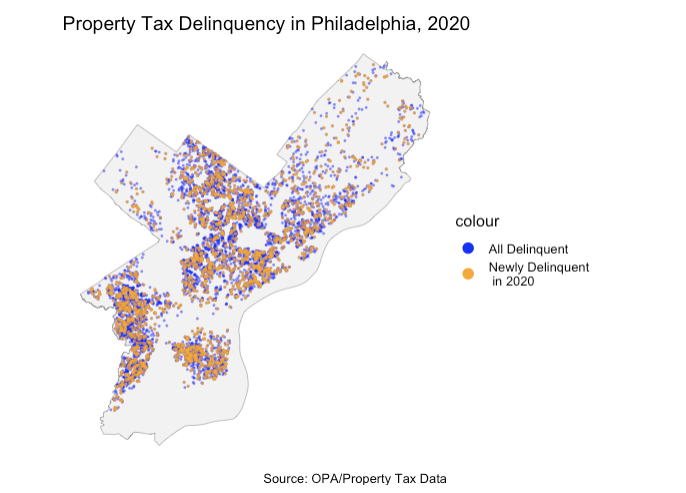
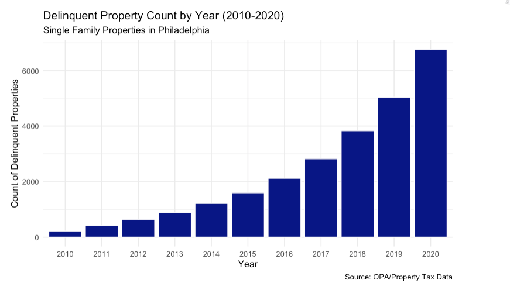
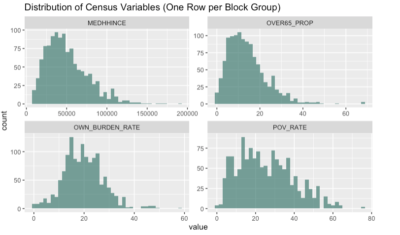
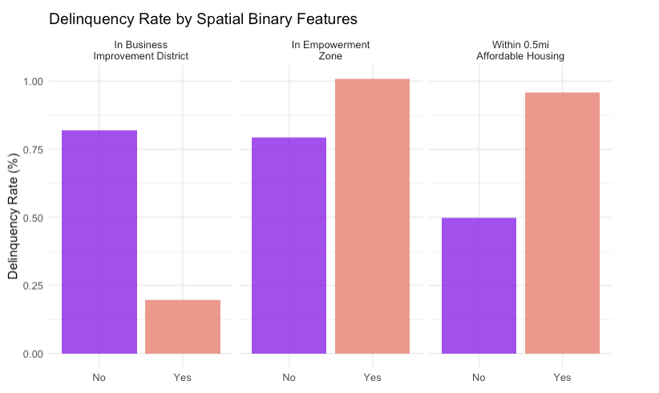
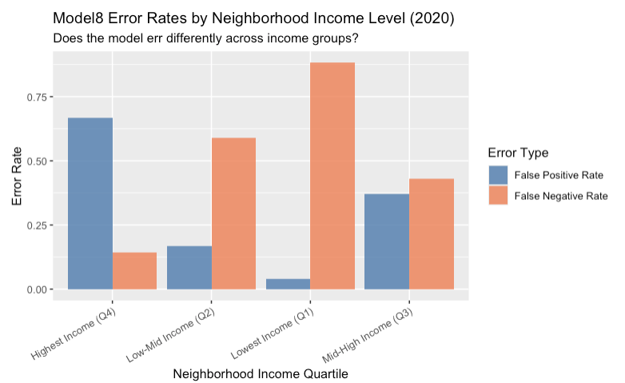

CPLN 5920 Final Presentation
2026-04-28
Adequately collecting property taxes has been a big issue for the City of Philadelphia
Property tax delinquency directly affects city revenue
Groups that are known to be disproportionately impacted:
Tax delinquency debt can accumulate rapidly with added interest
~1.4% - property tax rate of assessed market value
1.5% - monthly interest
15% - penalty applied for delinquency status
To identify which properties may need early outreach before entering tax delinquent status
Payment plans
Housing counseling
Location-based Information Dissemination
Which properties, not delinquent in 2019, will become delinquent in 2020?
2020 being a significant year given that the economy was impacted by COVID-19 pandemic.
Predicting delinquency for non-delinquent properties in 2019 controls for properties that were already struggling, which helps to isolate the effect of start of the pandemic in 2020
As mentioned earlier…
| Source | Outcomes Created for Model |
|---|---|
| City of Philadelphia Real Estate Tax Delinquency | Delinquency outcome (2010 to 2020) |
| OPA Property Characteristics | Market value, livable area, year built |
| ACS 2019 (Block Group) | Income, owner rate, age 65+, poverty |
| ACS 2019 (Census Tract) | Unemployment, owner cost burden |
| OpenDataPhilly | BIDs, empowerment zones, HCA distance |
| Philadelphia Crime Data | Burglary hotspot distance |
lag_delinquent → Whether the property was delinquent last year
times_delinquent_before → Number of past delinquency years
log_marketvalue → Property value (logged)
year_built → Age of the property
log_medhhince → Median household income (logged)
own_burden_rate → Share of owners spending a high % of income on housing
log_over65 → % of population over 65 (logged)
log_pov_rate → Poverty rate (logged)
in_bid → Located in a Business Improvement District
log_disthca → Distance to housing counseling services (logged)
log_disthotcrime → Distance to burglary hotspots (logged)
in_emp → Located in an Empowerment Zone
in_aff_buf → Near affordable housing
Name → Neighborhood fixed effect
Our outcome variable is binary where delinquent is 1 or not delinquent is 0
Our approach:
Less than 1% of properties become newly delinquent in any given year
A model that predicts “not delinquent” for everyone gets 99% accuracy, which assume all properties are delinquent when some may not be.
Iterative Modelling Process:
| Model | Approach |
|---|---|
| Model 1 | Lag only using lag_delinquent + times_delinquent_before |
| Model 2 | + Property Characterisitcs: lag_delinquent + times_delinquent_before + log_marketvalue + year_built |
| Model 3 | +Census Data lag_delinquent + times_delinquent_before + log_marketvalue + year_built + log_medhhince + OWN_BURDEN_RATE + log_over65 + log_pov_rate |
| Model 4 | +Spatial Features lag_delinquent + times_delinquent_before + log_marketvalue + year_built + log_medhhince + OWN_BURDEN_RATE + log_over65 + log_pov_rate + in_bid + log_disthca + log_disthotcrime + in_emp + in_aff_buf, |
| Model 5 | + Neighborhood Fixed Effect lag_delinquent + times_delinquent_before + log_marketvalue + year_built + log_medhhince + OWN_BURDEN_RATE + log_over65 + log_pov_rate + in_bid + log_disthca + log_disthotcrime + in_emp + in_aff_buf+ Name |
| Model 7 | + Inverse class weights same as model 5 with class-weights |
| Model 8 | + Balancing sample (4:1) + weights (Final Model) same as model 5 with balanced sample and class-weights |




Undersampling + Class Weights + Neighborhood Fixed Effects
| Metric | Value | What it means |
|---|---|---|
| Sensitivity | 0.797 | Caught ~80% of properties that became delinquent |
| Specificity | 0.493 | Correctly categorized 49% of non-delinquent properties |
| Precision | 0.011 | 1.1% of flagged properties were truly delinquent |
| AUC | 0.706 | considered acceptable model performance |

The model performs slightly better in mid-high income neighborhoods
Spatial Autocorrelation detected in residuals
Limited data sources
Class imbalance
How the City should use this model:
Neighborhood Thresholds: could help if the City considers lower thresholds in high-delinquency areas and higher in low-risk areas
Monitor Equity Impacts: Track if outreach efforts disproportionately burden any income group or neighborhood, then revisit thresholds if disparities do emerge
Jenny | Maude | Shubhanga | Vedika <3
Predicting Philadelphia Property Tax Delinquency | CPLN 5920 | April 28, 2026
City of Philadelphia Department of Revenue. (n.d.). Real estate tax delinquencies [Data visualization]. City of Philadelphia Open Data. https://data.phila.gov/visualizations/real-estate-tax-delinquencies
Fofana-Bility, F. (2025, June 12). Eight questions answered about Philly property taxes. City of Philadelphia Department of Revenue. https://www.phila.gov/2025-06-12-eight-questions-answered-about-philly-property-taxes/
Economy League of Greater Philadelphia. (2024). The ebb and flow of realty transfer tax revenue in Philadelphia, 2010–2024. https://www.economyleague.org/resources/ebb-and-flow-realty-transfer-tax-revenue-philadelphia-2010-2024
Moselle, A. (2022, September 8). Philadelphia’s property tax revenue grew faster than peers -but it still lags. The Philadelphia Inquirer. https://www.inquirer.com/news/philadelphia/philadelphia-property-taxes-assessment-pew-20220908.html
Yadav, D. (2020, April 14). Weighted logistic regression for imbalanced dataset. Medium. https://medium.com/data-science/weighted-logistic-regression-for-imbalanced-dataset-9a5cd88e68b
GeeksforGeeks. (2024, March 11). Weighted logistic regression for imbalanced dataset. https://www.geeksforgeeks.org/machine-learning/weighted-logistic-regression-for-imbalanced-dataset/